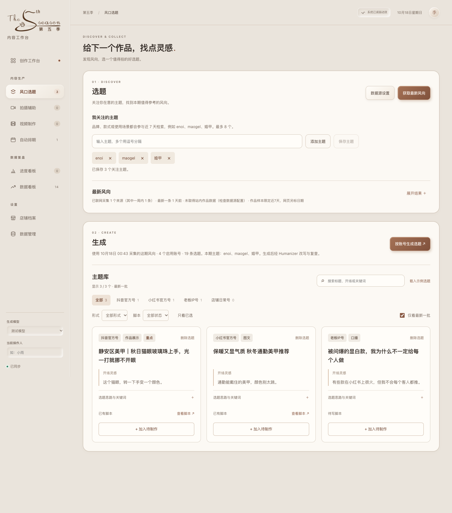
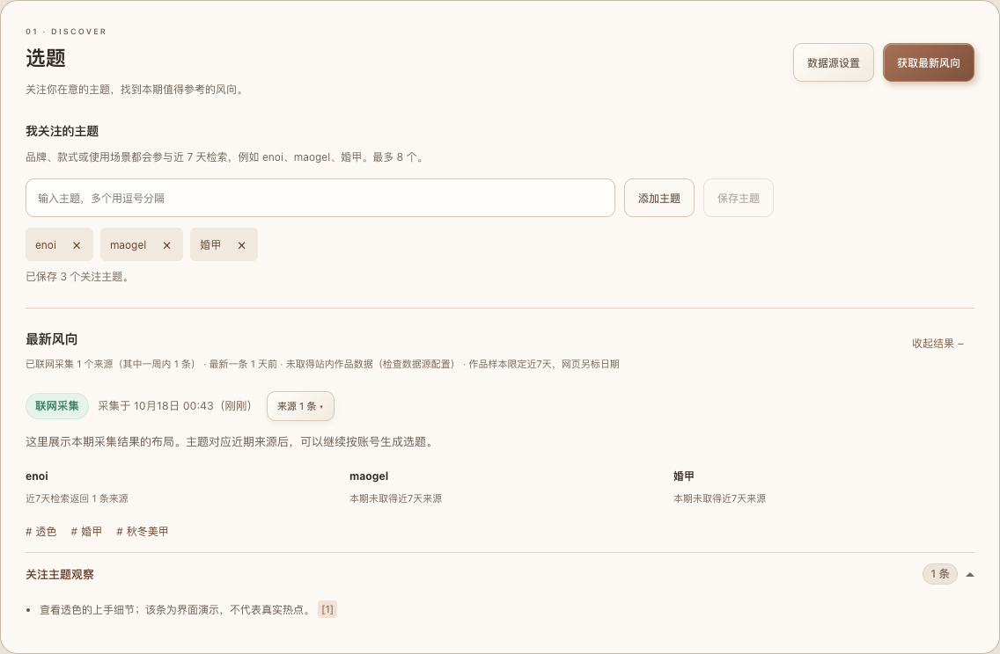
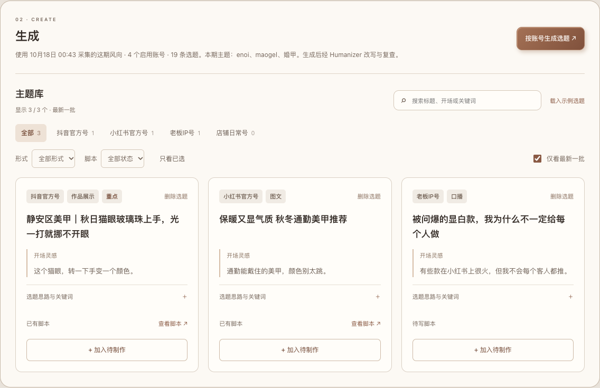
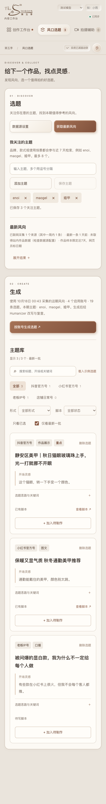
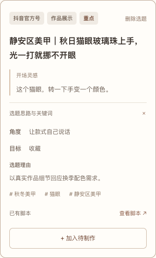

先选题，再生成。
页面收成 Discover 与 Create 两个主区域。减少嵌套色块，统一标签和卡片操作。
以下为隔离测试数据的界面截图，部分标题取自反馈示例；风向来源为演示，不代表真实采集结果。





页面收成 Discover 与 Create 两个主区域。减少嵌套色块，统一标签和卡片操作。
以下为隔离测试数据的界面截图，部分标题取自反馈示例；风向来源为演示，不代表真实采集结果。




